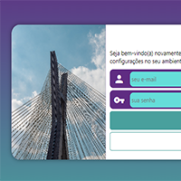
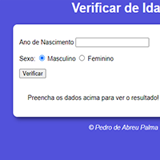

@PedroPalmaDev
Projeto 1
Meu projeto simulando uma tela de login responsiva a todos dispositivos, desde laptop, tablet e desktop até celular, uma boa parte da minha experiência com reponsividade veio através desse projeto!

@PedroPalmaDev
Projeto 2
Projeto usando JavaScript simulando um verificador de idade, ao digitar sua idade e selecionar seu sexo, aparecerá quantos anos você tem e uma foto de uma pessoa relacionada a sua idade e sexo. Esse projeto sem duvidas foi um dos meus ponta-pés iniciais no JavaScript!

@PedroPalmaDev
Projeto 3
Projeto em Python, simulando o famoso jogo "Pedra, papel e tesoura!", só que você estará contra a máquina, clique em resultado e veja seu funcionamento!